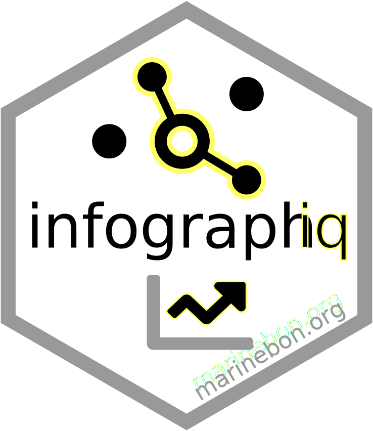

infographiq 
infographiqR
R library for supporting… creation of interactive infographics for data-driven storytelling. This tool will help you build your own interactive infographics website from only csv files and svg images. Please contact us by opening an issue if you need help getting started with this tool.
[ TODO: fix below to integrate with new infographiq, infographiqJS ]
New Architecture
- knit_modals(): iterate over unique modal_id to render parameterized rmd
- knit_modal_plots(): iterate over plots within modal
Usage overview
- Define your infographic by creating the following files:
./svg_elements.csv./plot_indicators.csv./svg/*.svg
For example files see the info-demo repository, or one of the examples cited above.
- Use infographiq from an R console to generate the website:
Install the infographiq R package and those it depends on. You only need to do this once.
# install required packages
install.packages(c("tidyverse", "stringr", "rmarkdown", "dygraphs", "xts", "lubridate", "geojsonio", "RColorBrewer", "leaflet", "crosstalk", "servr", "roxygen2", "futile.logger"))
# install infographiq from Github
if (!require('devtools')) install.packages('devtools')
devtools::install_github('marinebon/infographiq')Load the library and create the site.
# load
library(infographiq)
# run i.e.
create_info_site(site_title = "Monterey Bay Infographics", render_modals = T)Developer workflow
We developed this R package using the excellent devtools package. If you are actively changing your local copy of the infographiq package, ie functions contained in it, you can reload with:
To build documentation (using roxygen2, and assuming working directory is in ‘infographiq’)…
document()More Background
We will be actively developing this package (2017-11 to 2018-04), so please check back for updates. Here is some more background material that we will more seamlessly fold into documentation here at some point:
- https://marinebon.github.io/cr-metrics/README.html
- Help & Documentation for the Marine Biodiversity Observation Network (MBON)
Dependencies
pkgs <- c(
"brew", "dygraphs", "futile.logger", "lubridate", "rmarkdown", "servr", "stringr",
"tidyverse", "tools", "xts")
for (p in pkgs){
devtools::use_package(p)
}Updating website
To update the website for the R package, update documentation and regenerate the website outputs into the docs/ folder:
devtools::document()
pkgdown::deploy_to_branch()Then to view the site from RStudio, switch to branch gh-pages in the Git pane and in the Files pane click on index.html to View in Web Browser.
Automatic website update
Setup Github Action to build pkgdown website with the following:
usethis::use_github_action("pkgdown")The use_github_action() injects pkgdown.yaml and displays:
✓ Setting active project to '/Users/bbest/github/infographiq'
✓ Creating '.github/'
✓ Adding '^\\.github$' to '.Rbuildignore'
✓ Adding '*.html' to '.github/.gitignore'
✓ Creating '.github/workflows/'
✓ Writing '.github/workflows/pkgdown.yaml'